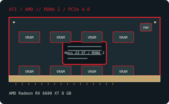

[ MODERN PCI EXPRESS GRAPHICS // IDENTIFIED COMPONENT ]
AMD Radeon RX 6600 XT 8 GB
Navi 23 XT / RDNA 2, 2021. This record identifies the listed retail model/configuration; board-partner variations are called out separately.

MODEL / VARIANT: RX 6600 XT 8 GB (Navi 23 XT), distinct from RX 6600 (non-XT) and the later RX 6650 XT. Partner clocks, dimensions and connectors vary.
Recorded specifications
| Cataloged product | AMD Radeon RX 6600 XT 8 GB |
|---|---|
| GPU / architecture / launch | Navi 23 XT / RDNA 2; 2021. |
| Core & memory | 32 compute units and 2,048 stream processors; 8 GB GDDR6 on a 128-bit bus; 2,359 MHz game clock and up to 2,589 MHz boost (reference targets). |
| Host interface & power | PCI Express 4.0 x8 electrical link in an x16-length connector; reference-class board power is 160 W and typically one 8-pin connector. 160 W total board-power reference; follow the exact board maker’s PSU and connector guidance. |
| Typical reference outputs | DisplayPort 1.4a and HDMI 2.1 class support; port count and exact panel are board-specific. |
| Board dimensions | Dimensions are board-specific. A documented Sapphire PULSE RX 6600 XT 8 GB board measures 235 × 105 × 43 mm (L × H × T); other partner cards differ. Verify the exact manufacturer model/revision before installation. |
| Variant boundary | RX 6600 XT 8 GB (Navi 23 XT), distinct from RX 6600 (non-XT) and the later RX 6650 XT. Partner clocks, dimensions and connectors vary. |
Compatibility, service & archival notes
Because it is wired for PCIe 4.0 x8, a PCIe 3.0 host may reduce link bandwidth; confirm motherboard slot wiring and firmware. The card requires a supported UEFI/driver environment and a suitable 8-pin supply lead. Match display outputs to monitor inputs and the partner card’s actual panel.
- Check the exact slot keying/signaling, board dimensions, auxiliary-power pinout, PSU guidance, airflow and display outputs for the specimen; connector appearance alone does not establish compatibility.
- Install a driver supporting the recorded device ID and target OS. Preserve the original driver and firmware versions before making changes.
- Record board partner, PCB and cooler revision, device/subsystem IDs, BIOS, adapter set and physical condition. Do not power a card with damage, corrosion, obstructed cooling or suspected shorts.
Manufacturer, model & standards sources
- AMD Radeon RX 6600 XT 8 GB specifications — TechPowerUp GPU DatabaseIndependent model-level GPU and memory reference; exact add-in-board properties can differ.
- AMD Radeon RX 6600 XT product specificationsManufacturer product specifications for the RX 6600 XT; add-in-board details remain partner-specific.
- PCI-SIG PCI Express specificationsHost-link standard reference; physical fit does not alone guarantee power, firmware or driver compatibility.
- AMD product support and driver selectionAMD manufacturer support reference for identifying a compatible driver branch and operating system; availability depends on product age.
- SAPPHIRE PULSE Radeon RX 6600 XT 8G specificationsBoard-manufacturer reference for the cited example dimensions; other add-in-board designs differ.
GPU-family references do not supersede the card manufacturer’s manual, nameplate or board revision for a specific specimen.